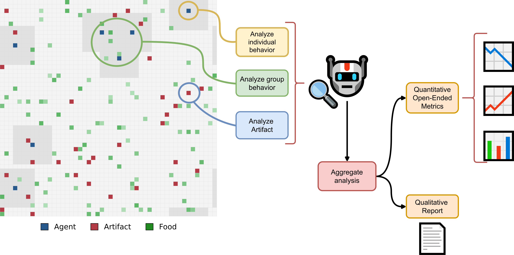

Overview
TerraLingua is a multi-agent simulation framework for studying emergent behavior, artifact creation, and cultural evolution.
LLM-powered agents (Claude or other models) interact in a shared 2D grid environment — foraging for resources, creating text artifacts, reproducing, and communicating — enabling research into how language-using agents develop social structure and culture over time.
After each experiment, the AI Anthropologist — itself an LLM agent — analyzes the simulation logs to annotate agent behaviors, infer group dynamics, classify artifacts, and trace cultural lineages, providing a qualitative and quantitative account of what emerged.

Explore the project
Source Code
The full simulation framework and analysis pipeline, on GitHub.
github.com/cognizant-ai-lab/terralingua →Dataset
The experimental dataset of agent runs, artifacts, and annotations, on Hugging Face.
huggingface.co/datasets/GPaolo/TerraLingua →Explore the Dataset
Explore agent interactions, artifacts, and annotations in your browser.
aianthropology.decisionai.ml →Citation
If you use TerraLingua in your research, please cite:
@techreport{paolo26terralingua,
title = "TerraLingua: Emergence and Analysis of Open-Endedness in LLM Ecologies",
author = "Giuseppe Paolo and Jamieson Warner and Hormoz Shahrzad and Babak Hodjat and Risto Miikkulainen and Elliot Meyerson",
year = 2026,
month = jan,
institution = "Cognizant AI Lab",
url = "https://arxiv.org/abs/2603.16910",
doi = "10.48550/arXiv.2603.16910",
number = "2026-01"
}